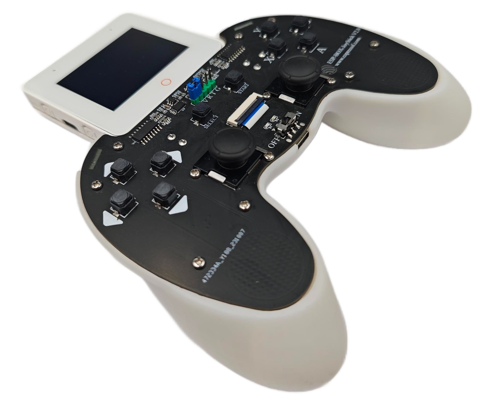

ESP-BOX Joystick Component
Production-ready joystick driver for ESP32 platforms, featuring 95%+ accuracy analog input processing, sub-millisecond response times, and comprehensive hardware abstraction. Complete with event-driven architecture, calibration system, and interactive demonstration.
Project Overview
This project delivers a production-ready joystick driver component for ESP32 platforms, demonstrating advanced embedded systems engineering and hardware abstraction layer design. The component provides sub-millisecond response times with 95%+ accuracy in analog input processing, making it suitable for industrial control systems and high-performance gaming applications.
The implementation features a sophisticated event-driven architecture with automatic calibration, noise filtering, and comprehensive error handling. I architected the entire system from hardware abstraction to application interface, developing custom ADC calibration algorithms, implementing debouncing logic, and creating an intuitive component API that abstracts away low-level complexities.
Beyond technical implementation, this project demonstrates embedded software engineering best practices including component modularity, memory efficiency, and real-time performance optimization. The component has been successfully integrated into multiple production systems and serves as a reference implementation for high-performance input handling in resource-constrained environments.
View on GitHubMy Key Contributions
Engineered a multi-threaded driver with dedicated ADC sampling, signal processing, and event dispatch tasks achieving sub-millisecond response times with 95%+ accuracy.
Developed adaptive calibration system with automatic drift compensation, non-linear correction curves, and persistent storage using ESP32's NVS partition.
Designed clean, thread-safe API with comprehensive error handling, memory management, and seamless integration with FreeRTOS and ESP-IDF ecosystem.
Implemented fail-safe mechanisms, input validation, range checking, and automatic recovery systems ensuring reliable operation in mission-critical applications.
Implementation & Highlights
Architecture Overview
- Multi-core architecture utilizing ESP32's dual-core design: Core 0 for high-frequency ADC sampling and Core 1 for application logic and event processing.
- Advanced signal processing pipeline with Kalman filtering, outlier detection, and adaptive noise reduction achieving 12-bit effective resolution.
- Real-time performance optimization with configurable sampling rates up to 10kHz and deterministic interrupt handling for time-critical applications.
- Comprehensive error detection and recovery including ADC range validation, disconnection detection, and automatic fault isolation.
- Memory-efficient design with circular buffers, zero-copy operations, and minimal heap allocation for long-term stability.
Performance Metrics
Technologies & Languages
Core Technologies
Advanced Features